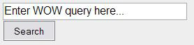
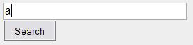
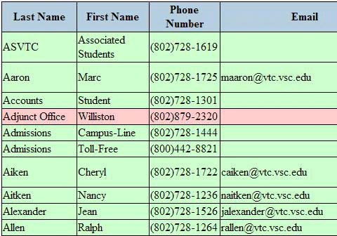
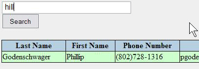
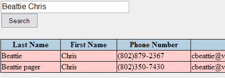
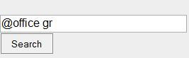
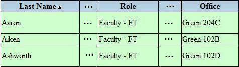

Window on the World, or WOW for short, is a look-up tool for staff members.
To search for specific staff members, we use the search bar:

Let's try a practice search. First, click on the search bar where it says, "Enter WOW query here..."
Clicking will automatically remove that message. Now press the a key so that it appears like this:

Once the key is inserted, execute a search by pressing the enter (or return) key.
You can also click on the Search button below the text field.
It should return a list of results that look something like this:

What this did was send a search to the database for anyone with the letter a in their last name.
The search works phone book-style, in that a last name is placed before the first name.
So what if you want to search only for a first name?
Let's say we want to find everyone in the database that has the word hill in their first name.
Click inside of the search bar. Press backspace once to remove the a key. The search bar should now be empty.
First, press the space bar key.
Next, type the word hill into the search bar.
Once you've done this, perform a search by pressing enter/return or by clicking on the Search button.
The result will look similar to this:

Now you know how to find information with a last name or a first name. It's just as simple to search for a first name and a last name:
Let's say we want to find someone named Chris Beattie.
First, double-click on the search bar. This will highlight all of the text from the previous search.
Once highlighted, press the backspace key to remove everything from the search bar.
Type into the text field, Beattie Chris. The result will look like this:

You don't have to enter entire names to find the person you're looking for. Try experimenting with different combinations of letters or names.
@Searches are useful if you want to find everyone associated with a certain thing. There are seven things that people can
be associated with and they are: phone, email, department, campus, role, fax and office.
The quickest and easiest way of doing an @Search is to use one of the buttons under Search+. Clicking Fax Numbers will
give you all the fax numbers. Clicking either Phone Number or Office Search will place either @phone or @office in the search bar. All that you
need to do is supply all or part of the phone number or office you are looking for. For example, if you want to see all the results for offices that start
with "gr", click Office Search and add a space then gr after @office in the search bar.

Then click search.
This will produce results for all offices starting with "gr" (NOTE: Not all columns are shown).

If you want to do a department search click Department Search under Search+. This will open up a new window
with a list of all the departments. If you click one of the departments, an @Search will be automatically done for you and the results
will display.